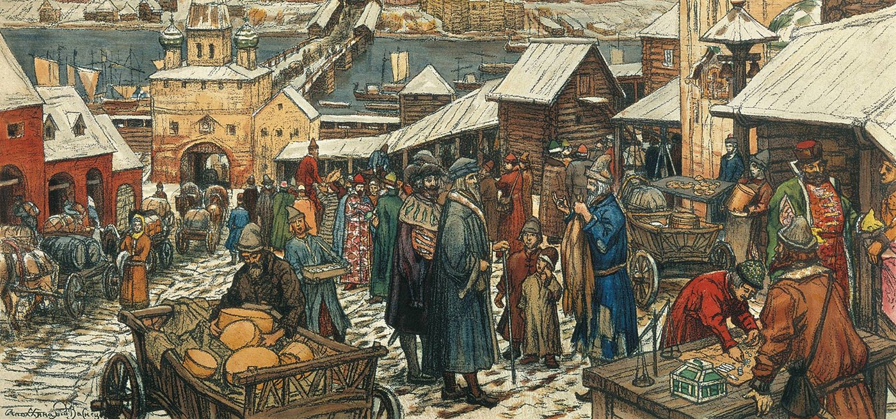

Manchetes Ciências Humanas
Comerciantes

Você já se perguntou como os comerciantes viviam na idade média?
Ser comerciante não era nada fácil, por ser uma profissão de época, e não ter muitos recursos como os dias atuais, os comerciantes não tinham apenas que vender as mercadorias, eles tinham que saber uma série de fatores da época, como:
Estar sempre atualizado do mercado, seja em preços, mercadorias, moda, deveriam ser flexíveis, já que o mercado estava sempre em mudanças;
Conhecer as rotas comerciais, por ser um comerciante, carregavam muitas vezes bastante dinheiro, então saber os caminhos certos os ajudava muito contra tentativas de roubos de dinheiro e/ou mercadorias, sem contar que deveriam ter um bom senso de direção ( saber os pontos cardeais, “ler” as estrelas, etc);
Muitos comerciantes participavam de guildas comerciais, para estabelecerem seus interesses, moedas, mercadorias;
Sem contar, que os comerciantes ajudaram na expansão de muitas cidades, como Veneza, Florença e Bruges, que se tornaram centros comerciais da época.
Claro que, além desses, existiam muitos outros fatores sobre um comerciante, como saber as leis, ter mercadorias estrangeiras, pirataria, entre outros.
Sem contar que, os comerciantes desempenharam um papel crucial na conexão de cidades, na expansão da economia e no conhecimento cultural. Podemos dizer que eram uma peça importante para a sociedade, já que, iam moldando o mundo conforme seus conhecimentos, negociações e ideias ao longo das rotas.